library(tidyverse)
library(cowplot)
library(broom)
library(modelr)
library(viridis)
library(lubridate)
library(hms)
knitr::opts_chunk$set(tidy.opts=list(width.cutoff=60),tidy=TRUE, echo = TRUE, message=FALSE, warning=FALSE, fig.align="center")
source("../../tools/echem_processing_tools.R")
source("../../tools/plotting_tools.R")
theme_set(theme_1())First let’s import the SWV data from all the runs. Now I’m using the “recursive” option in dir() to look through the whole directory strucutre of the raw data files. This allows me to preserve the file structure, which is nice for humans, but still find all the SWV txt files. This works well because the individual files are still named uniquely.
#divide swv into rep and subrep and then subtract 1 from rep to match with GC
SWV_file_paths <- dir(path='../Data', pattern = "[SWV]+.+[txt]$",recursive = T,full.names = T)
SWV_filenames <- basename(SWV_file_paths)
swv_data_cols <- c('E','i1','i2')
filename_cols = c('PHZadded','treatment','reactor','run','echem','rep')
swv_skip_rows=18
swv_data <- echem_import_to_df(filenames = SWV_filenames,
file_paths = SWV_file_paths,
data_cols = swv_data_cols,
skip_rows = swv_skip_rows,
filename_cols = filename_cols,
rep = T) %>%
mutate(rep=rep-1)Ok, let’s see what the electrode 1 transfer data looks like: (remember there was 1 soak scan taken before each transfer)
ggplot(swv_data %>% filter(electrode=='i1' & reactor=='transfer'), aes(x=E, y=current,color=rep,group=factor(rep)))+geom_path()+
facet_grid(treatment~run,scales='free')+
scale_color_viridis()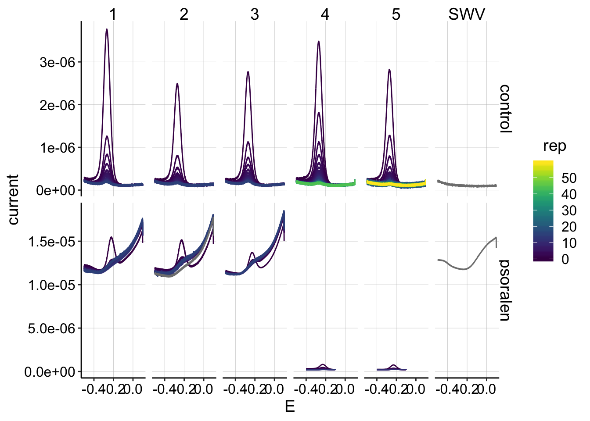 Ok, this is the data I expected.
* First, the panel on the far right incorrectly labeled “SWV” is actually the background scan with 0uM PYO, but I’m not going to worry about that now. * Next, we can see that there’s a big difference between the first 3 psoralen runs and the last 2 (4 & 5). For some reason SWV fast produced signals with very high background, starting at the beginning of the experiment. It might still be possible to background subtract them and make use of them, but they look bad…they don’t change very much over the time course. * After the first 3 attempts, I switched to a modified SWV slow for the final 2 psoralen runs, and the high background signal went away. * The control runs look beautiful! The first 3 had about 15 datapoints to measure \(D_{ap}\), and the last 2 had 60 sequential SWVs to measure \(D_m\).
Now let’s look at the same transfer data for electrode 2:
ggplot(swv_data %>% filter(electrode=='i2' & reactor=='transfer'), aes(x=E, y=current,color=rep,group=factor(rep)))+geom_path()+
facet_grid(treatment~run,scales='free')+
scale_color_viridis()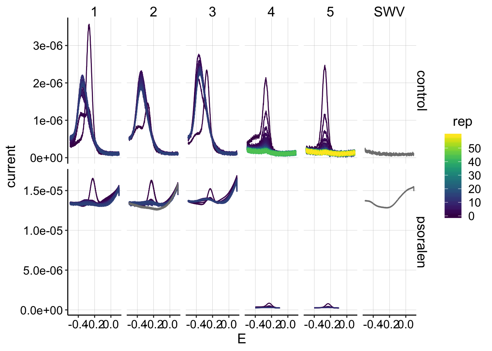 This is also the data I expected, although I admit it is not ideal: * Runs 4 and 5 from the control and psoralen look acceptable, there are clear peaks that diminish. * Unfortunately for runs 1-3 the peaks do not decay, but instead shift and stay relatively constant. Previously, I interpreted this to mean that there is some buildup/reaction that occurs at the collector electrode during GC. Performing the SWV scan immediately after the reductive GC sweep reveals this unexpected product. It is unclear if this is PYO that has built up and for some reason has a shifted peak, or some other side reaction. I do not know how to deal with this, other than hope that it does not affect the reasonable signal measured at electrode 1…
Here’s a closer look at the psoralen SWVs from runs 4 and 5 (electrode 1):
ggplot(swv_data %>% filter(electrode=='i1' & reactor=='transfer' & treatment=='psoralen' & run %in% c(4,5)), aes(x=E, y=current,color=rep,group=factor(rep)))+geom_path()+
facet_wrap(treatment~run,scales='free')+
scale_color_viridis()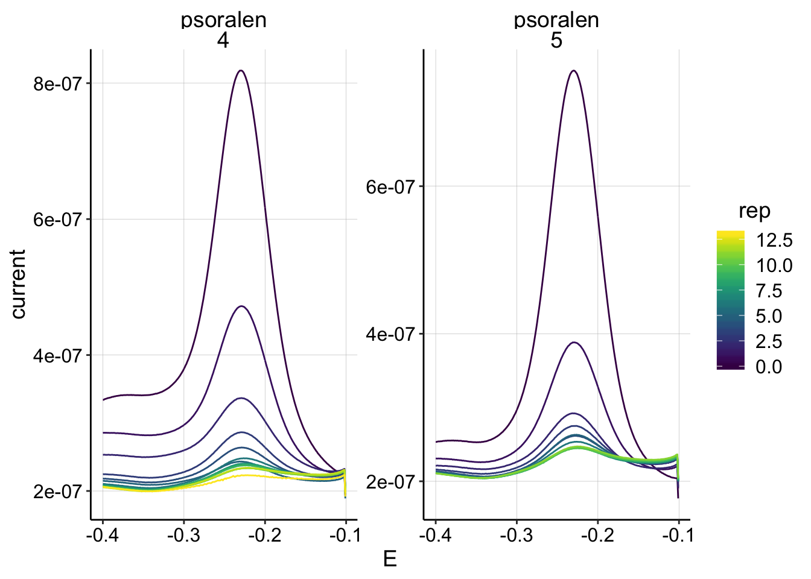 They look pretty clean and diminish as expected, so I’ll proceed with these for now.
Now let’s import the GC data for the \(D_{ap}\) estimates.
GC_file_paths <- dir(path='../Data', pattern = "[GC]+.+[txt]$",recursive = T,full.names = T)
GC_filenames <- basename(GC_file_paths)
gc_data_cols <- c('E','i1','i2','t')
filename_cols = c('PHZadded','treatment','reactor','run','echem','rep')
gc_skip_rows=21
gc_data <- echem_import_to_df(filenames = GC_filenames,
file_paths = GC_file_paths,
data_cols = gc_data_cols,
skip_rows = gc_skip_rows,
filename_cols = filename_cols,
rep = T)Let’s look at all of the GCs taken during transfer:
ggplot(gc_data %>% filter(reactor=='transfer'), aes(x=E, y=current,color=rep,group=electrode))+
geom_point(size=0.5)+
facet_grid(treatment~run,scales='free')+
scale_x_reverse() +
scale_color_viridis(discrete = F)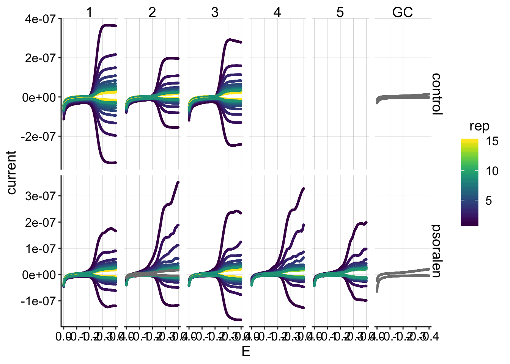 Ok, this dataset looks pretty much as expected. * The psoralen generators (top i1 lines) look a little funky, as we have seen in the past… * The first rep from each run goes down around -0.4V instead of leveling off, as we expect during the initial period of diminishing PYO concentrations. However, later on (in the control particularly) the GCs seem very symmetrical and do level off (ideal behavior).
Let’s zoom in on the collector data. I’m now plotting the collector data as positive:
ggplot(gc_data %>% filter(reactor=='transfer' & electrode=='i2'), aes(x=E, y=-current,color=rep,group=factor(rep))) +
geom_path()+
facet_grid(treatment~run,scales='free')+
scale_color_viridis()+
scale_x_reverse()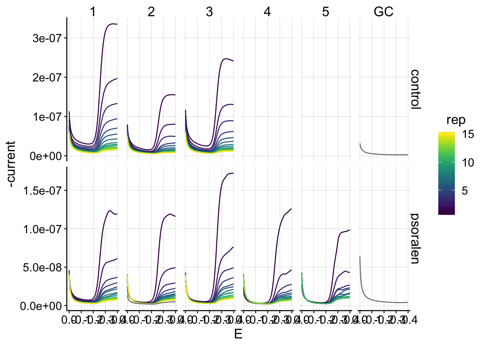 This is the dataset I will quantify, and overall it looks pretty good! In general the signals decay smoothly as the reps go on.
First, let’s quantify the control SWVs, since they are all of similar shape and magnitude (and the psoralen data is not).
swv_control_data <- swv_data %>%
filter(treatment=='control' & PHZaddedInt==75)
unique_id_cols = c('PHZadded','treatment','reactor','run','echem','rep','minutes','PHZaddedInt','electrode')
swv_control_signals <- echem_signal(df = swv_control_data,
unique_id_cols = unique_id_cols,
max_interval = c(0.0,-0.4),
min_interval = c(0.0,-0.4)) First, let’s look at the electrode 1 data, which will be used for further analysis.
ggplot(swv_control_data %>% filter(electrode=='i1'),
aes(x = E, y = current, color = rep, shape=reactor, group=factor(rep))) +
geom_path()+
geom_point(data = swv_control_signals %>% filter(electrode=='i1'),
aes(x = E_from_maxs, y = current_from_maxs), color = 'red') +
geom_point(data = swv_control_signals %>% filter(electrode=='i1'),
aes(x = E_from_mins, y = current_from_mins), color = 'blue') +
facet_wrap(~run,scales='free')+
scale_x_reverse()+
scale_color_viridis()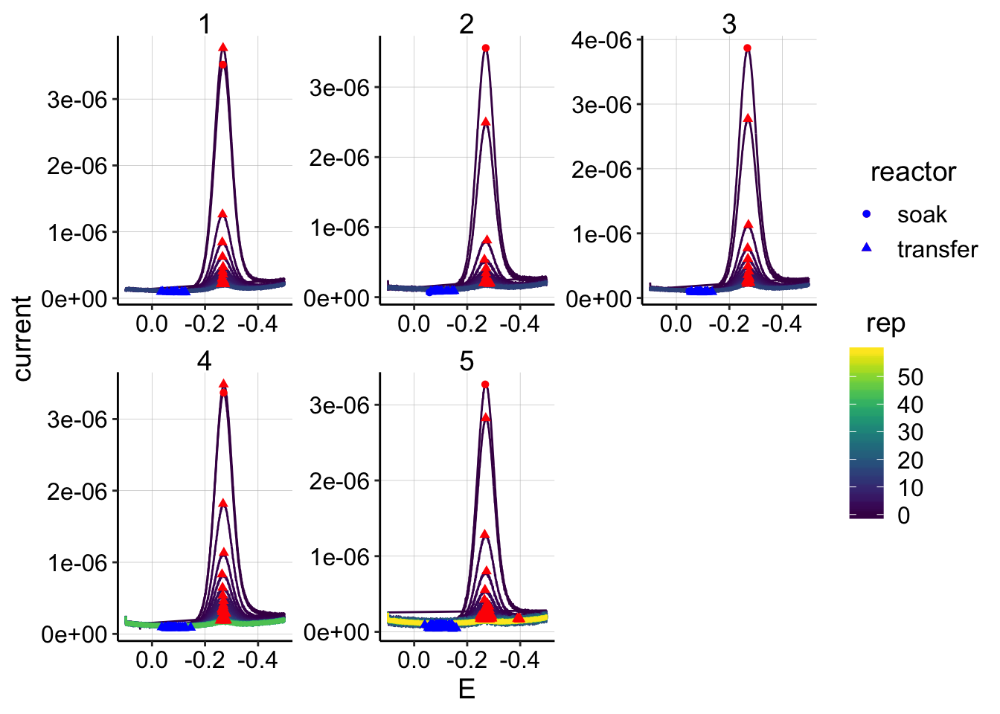 The quantification looks pretty clean overall: * There are 2 datapoints in run 5 that appear to have max points not in the main redox peak, but let’s ignore those for now. * Interestingly, notice the differences between the soak scan and the first transfer scan (top circle/triangle). In all cases, the scans are pretty close in magnitude. For runs 1 and 4 the transfer peaks are actually slightly higher than the soak…
Now let’s examine the electrode 2 data, even though I don’t intend to use it right now.
ggplot(swv_control_data %>% filter(electrode=='i2'),
aes(x = E, y = current, color = rep, shape=reactor, group=factor(rep))) +
geom_path()+
geom_point(data = swv_control_signals %>% filter(electrode=='i2'),
aes(x = E_from_maxs, y = current_from_maxs), color = 'red') +
geom_point(data = swv_control_signals %>% filter(electrode=='i2'),
aes(x = E_from_mins, y = current_from_mins), color = 'blue') +
facet_wrap(~run,scales='free')+
scale_x_reverse()+
scale_color_viridis()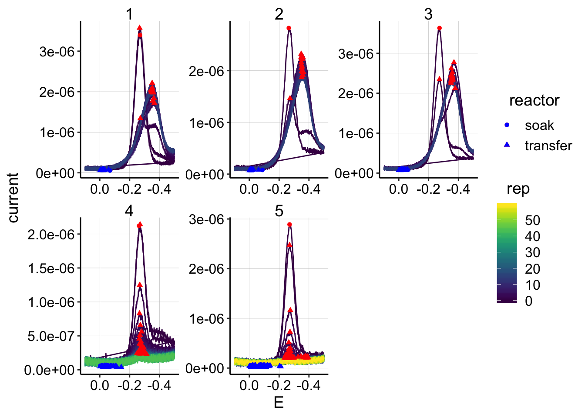 The quantification looks fine, and we see the same general patterns with the soak/transfer.
Let’s see how the signals (max - min points) actually look across the reps.
ggplot(swv_control_signals, aes(x=rep, y=signal,shape=reactor,color=factor(run)))+geom_line()+geom_point()+
facet_wrap(~electrode)+
scale_color_viridis(discrete = T)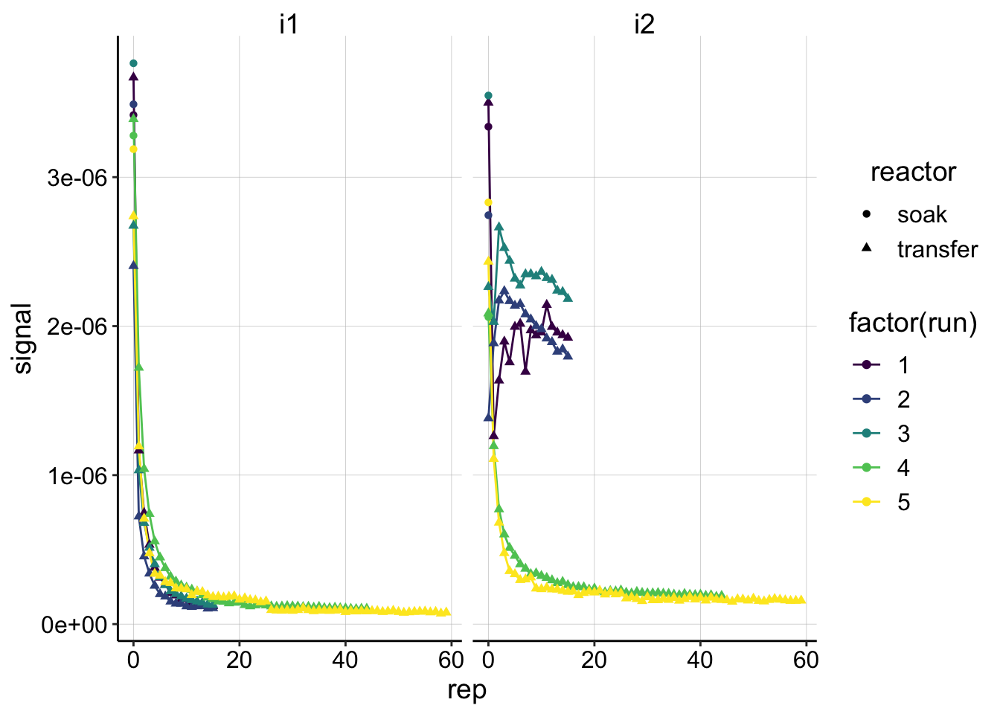 These signals look good and show the same patterns that we would expect from the raw data. You can see the the i2 following the GCs from runs 1-3 look very weird.
swv_psoralen_data <- swv_data %>%
filter(treatment=='psoralen' & PHZaddedInt==75) %>%
filter(run %in% c(4,5))
unique_id_cols = c('PHZadded','treatment','reactor','run','echem','rep','minutes','PHZaddedInt','electrode')
swv_psoralen_signals <- echem_signal(df = swv_psoralen_data,
unique_id_cols = unique_id_cols,
max_interval = c(-0.11,-0.4),
min_interval = c(-0.11,-0.4)) ggplot(swv_psoralen_data %>% filter(electrode=='i1'),
aes(x = E, y = current, color = rep, shape=reactor, group=factor(rep))) +
geom_path()+
geom_point(data = swv_psoralen_signals %>% filter(electrode=='i1'),
aes(x = E_from_maxs, y = current_from_maxs), color = 'red') +
geom_point(data = swv_psoralen_signals %>% filter(electrode=='i1'),
aes(x = E_from_mins, y = current_from_mins), color = 'blue') +
facet_wrap(reactor~run,scales='free')+
scale_x_reverse()+
scale_color_viridis()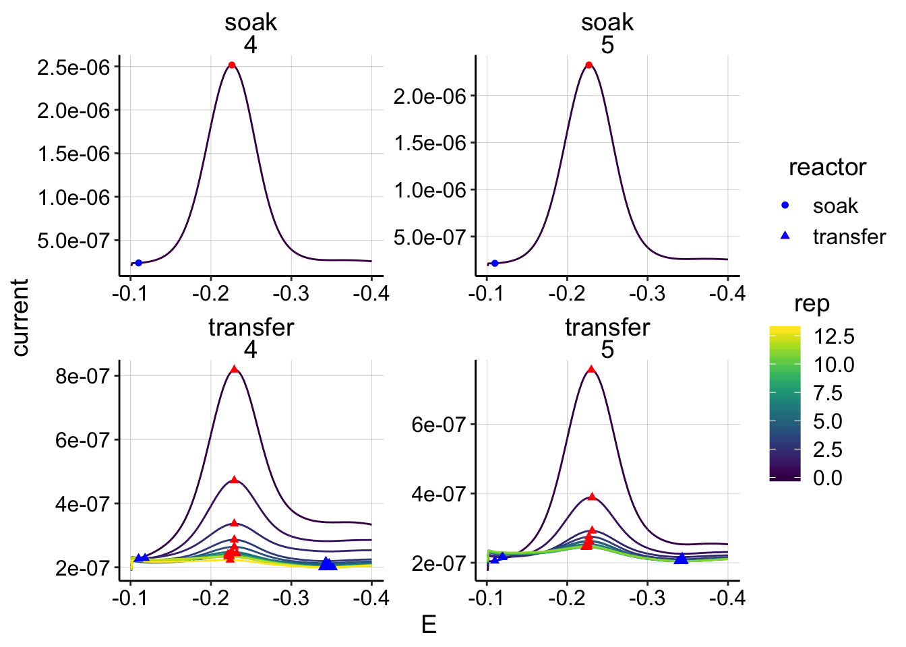
gc_data_i2 <- gc_data %>%
filter(electrode=='i2' & PHZaddedInt==75) %>%
mutate(current=-current)
unique_id_cols = c('PHZadded','treatment','reactor','run','echem','rep','minutes','PHZaddedInt','electrode')
gc_signals <- echem_signal(df = gc_data_i2,
unique_id_cols = unique_id_cols,
max_interval = c(-0.399,-0.399),
min_interval = c(0.0,-0.4)) Let’s look at all of the transfer gc data:
ggplot(gc_data_i2 %>% filter(reactor=='transfer'),
aes(x = E, y = current, color = rep, shape=reactor, group=factor(rep))) +
geom_path()+
geom_point(data = gc_signals %>% filter(reactor=='transfer'),
aes(x = E_from_maxs, y = current_from_maxs), color = 'red') +
geom_point(data = gc_signals %>% filter(reactor=='transfer'),
aes(x = E_from_mins, y = current_from_mins), color = 'blue') +
facet_grid(treatment~run,scales='free')+
scale_x_reverse()+
scale_color_viridis()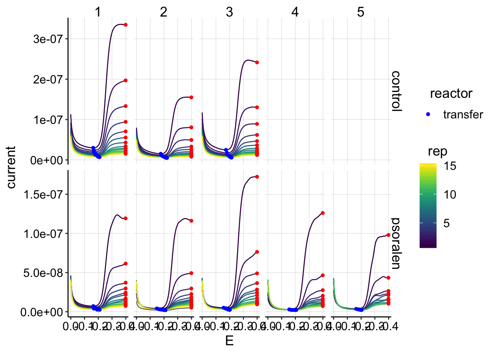
This quantification looks reasonable. All the maxs are at the endpoints of the run and the mins are in the same regions of the plots.
Let’s look at the soak GCs just to see:
ggplot(gc_data_i2 %>% filter(reactor=='soak' & rep==1),
aes(x = E, y = current, color = factor(run), shape=reactor, linetype=treatment)) +
geom_path()+
geom_point(data = gc_signals %>% filter(reactor=='soak'),
aes(x = E_from_maxs, y = current_from_maxs), color = 'red') +
geom_point(data = gc_signals %>% filter(reactor=='soak'),
aes(x = E_from_mins, y = current_from_mins), color = 'blue') +
scale_x_reverse()+
scale_color_viridis(discrete = T)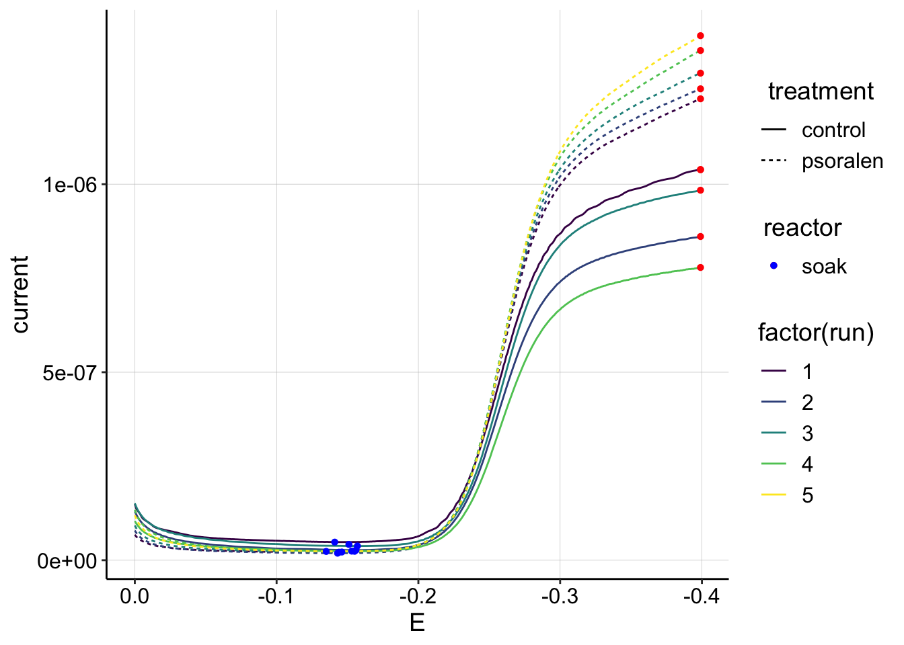 Interesting. The psoralen curves are consistently higher than the control, which may be related to the fact that there was more biomass on the control electrode, which may have effectively blocked the solution PYO more than the psoralen biofilm. Also note that these GC magnitudes are almost an order of magnitude higher than the highest transfer GCs. This is different than the SWVs and I’m not sure why. It could be because the first scan taken was an SWV, but it could also be that GC should be more sensitive to changes in \(D_{ap}\) than SWV…
Let’s also look at the GC signals vs. rep:
ggplot(gc_signals, aes(x = rep, y = signal,shape=reactor, color=factor(run)))+
geom_line()+
geom_point()+
facet_wrap(reactor~treatment,scales='free')+
scale_color_viridis(discrete = T)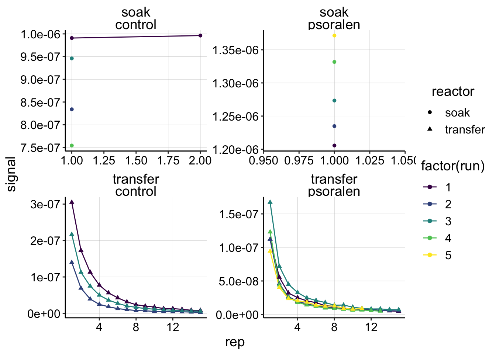
Control Dataset
swv_gc_control <- left_join(swv_control_signals %>% filter(run<=3),gc_signals,
by=c('run','rep','reactor','treatment'),
suffix=c('_from_swv','_from_gc'))
write_csv(swv_gc_control,"./01_17_19_swv_gc_control_dap_processed.csv")
ggplot(swv_gc_control %>% filter(reactor=='transfer' & electrode_from_swv=='i1' & rep>0), aes(x = signal_from_swv, y = signal_from_gc, color=factor(run)))+
geom_line()+
geom_point()+
geom_smooth(method='lm',se=F)+
scale_color_viridis(discrete = T)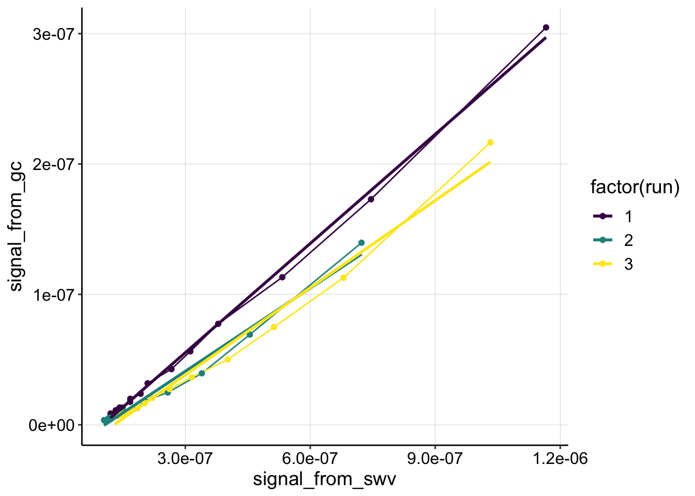
swv_gc_control_lms <- swv_gc_control %>%
filter(reactor=='transfer' & rep>0 & electrode_from_swv=='i1') %>%
group_by(run,treatment,electrode_from_swv) %>%
do(tidy(lm(signal_from_gc~signal_from_swv,.)))Psoralen dataset
swv_gc_psoralen <- left_join(swv_psoralen_signals ,gc_signals,
by=c('run','rep','reactor','treatment'),
suffix=c('_from_swv','_from_gc'))
write_csv(swv_gc_psoralen,"./01_17_19_swv_gc_psoralen_dap_processed.csv")
ggplot(swv_gc_psoralen %>% filter(reactor=='transfer' & electrode_from_swv=='i1' & rep>0), aes(x = signal_from_swv, y = signal_from_gc, color=factor(run)))+
geom_line()+
geom_point()+
scale_color_viridis(discrete = T)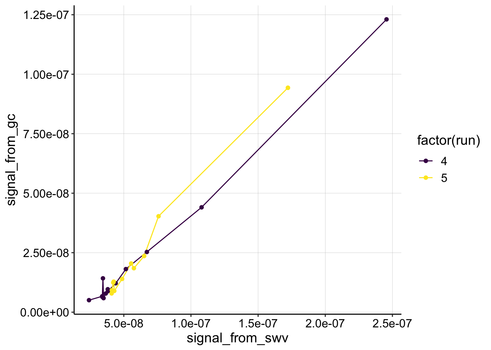
swv_gc_psoralen_lms <- swv_gc_psoralen %>%
filter(reactor=='transfer' & rep>0) %>%
group_by(run,treatment,electrode_from_swv) %>%
do(tidy(lm(signal_from_gc~signal_from_swv,.)))